Amendment #235 (S.O. 144(E), 1997)
7 changes: 0 to the First Schedule, 7 to the Second Schedule. 6 applied1 not applied
What it did to the ministries
- grewMinistry of Surface Transport grows from 37 to 56 subjects change 6 · histories: Surface Transport
The order, page by page
Page 1 of 12
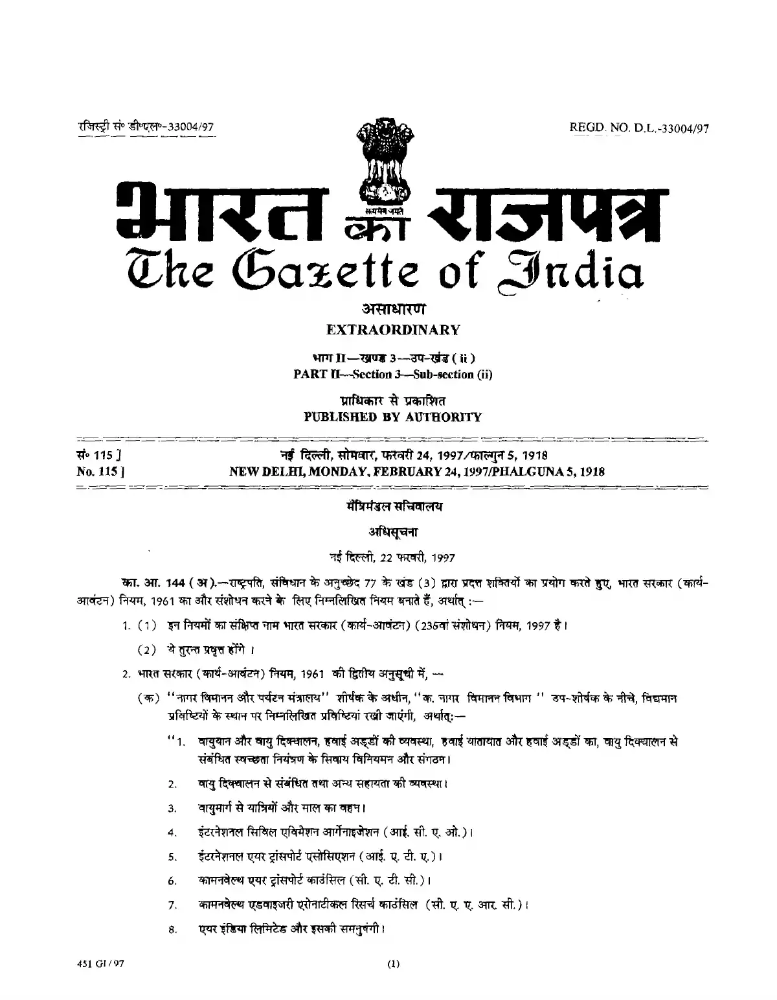
Page 2 of 12
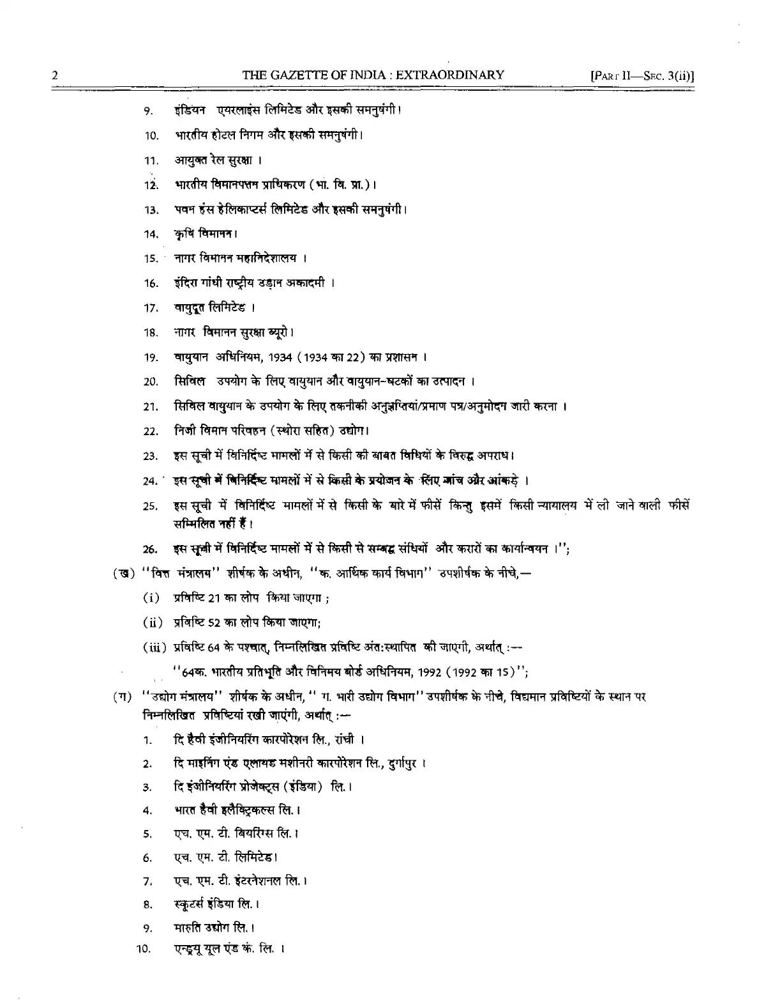
Page 3 of 12
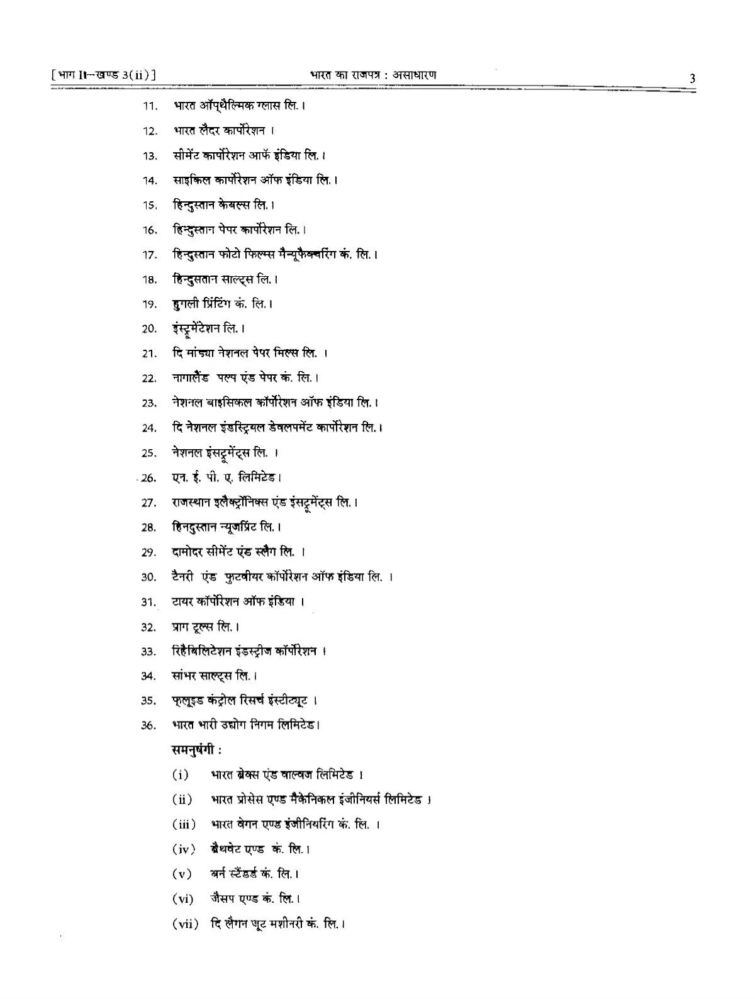
Page 4 of 12
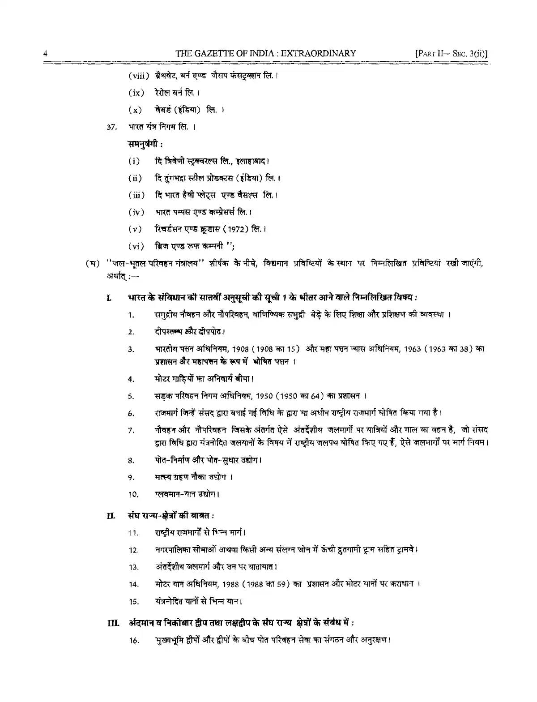
Page 5 of 12
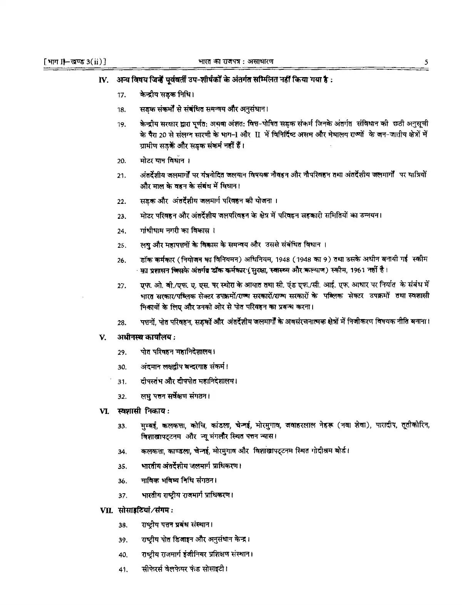
Page 6 of 12
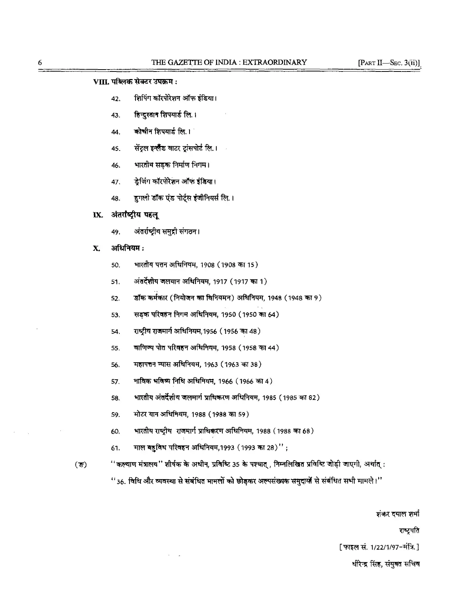
Page 7 of 12
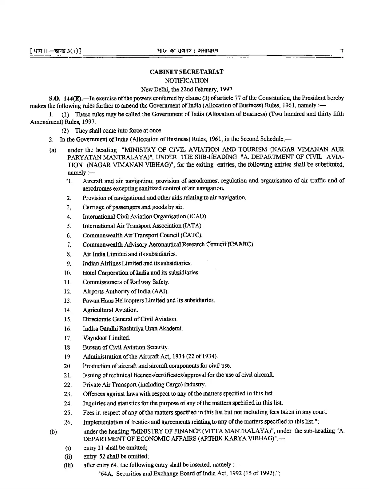
1234Schedule 2 › MINISTRY OF CIVIL AVIATION AND TOURISM › DEPARTMENT OF CIVIL AVIATION
- 1. Aircraft and air navigation; provision of aerodromes; regulation and organisation of air traffic and of aerodromes excepting sanitized control of air navigation.
- 2. Provision of navigational and other aids relating to air navigation.
- 3. Carriage of passengers and goods by air.
- 4. International Civil Aviation Organisation (ICAO).
- 5. International Air Transport Association (IATA).
- 6. Commonwealth Air Transport Council (CATC).
and 20 more
- 7. Commonwealth Advisory Aeronautical Research Council (CAARC).
- 8. Air India Limited and its subsidiaries.
- 9. Indian Airlines Limited and its subsidiaries.
- 10. Hotel Corporation of India and its subsidiaries.
- 11. Commissioners of Railway Safety.
- 12. Airports Authority of India (AAI).
- 13. Pawan Hans Helicopters Limited and its subsidiaries.
- 14. Agricultural Aviation.
- 15. Directorate General of Civil Aviation.
- 16. Indira Gandhi Rashtriya Uran Akademi.
- 17. Vayudoot Limited.
- 18. Bureau of Civil Aviation Security.
- 19. Administration of the Aircraft Act, 1934 (22 of 1934).
- 20. Production of aircraft and aircraft components for civil use.
- 21. Issuing of technical licences/certificates/approval for the use of civil aircraft.
- 22. Private Air Transport (including Cargo) Industry.
- 23. Offences against laws with respect to any of the matters specified in this list.
- 24. Inquiries and statistics for the purpose of any of the matters specified in this list.
- 25. Fees in respect of any of the matters specified in this list but not including fees taken in any court.
- 26. Implementation of treaties and agreements relating to any of the matters specified in this list.
applied at schedule 2 › ministry Ministry of Civil Aviation and Tourism (Nagar Vimanan Aur Paryatan Mantralaya) › department… in the Rules after #235
Schedule 2 › MINISTRY OF FINANCE › DEPARTMENT OF ECONOMIC AFFAIRS › entry 21
applied at schedule 2 › ministry MINISTRY OF FINANCE › department A › group_heading III › entry 21 in the Rules after #235
Schedule 2 › MINISTRY OF FINANCE › DEPARTMENT OF ECONOMIC AFFAIRS › entry 52
applied at schedule 2 › ministry MINISTRY OF FINANCE › department A › group_heading V › entry 52 in the Rules after #235
after Schedule 2 › MINISTRY OF FINANCE › DEPARTMENT OF ECONOMIC AFFAIRS › entry 64
- 64A. Securities and Exchange Board of India Act, 1992 (15 of 1992).
applied at schedule 2 › ministry MINISTRY OF FINANCE › department A › group_heading V › entry 64A in the Rules after #235
Page 8 of 12
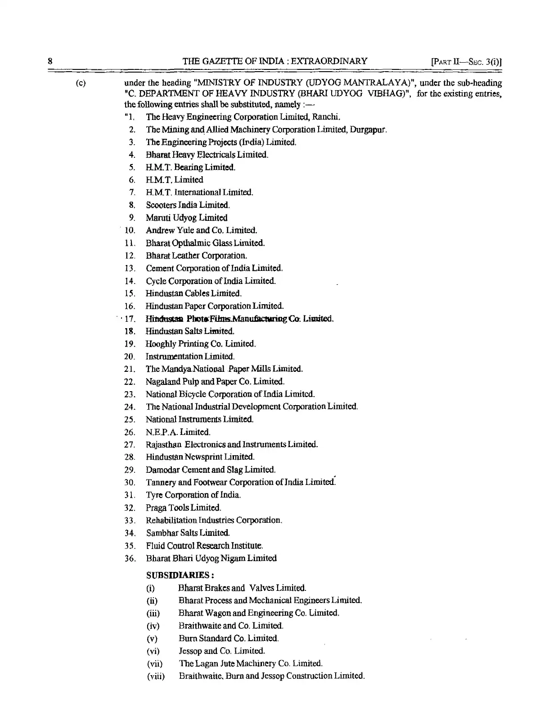
5Schedule 2 › MINISTRY OF INDUSTRY › DEPARTMENT OF HEAVY INDUSTRY
- 1, The Heavy Engineering Corporation Limited, Ranchi
- 2. The Mining and Allied Machinery Corporation Limited, Durgapur.
- 3. The Engineering Projects (India) Limited.
- 4. Bharat Heavy Electricals Limited.
- 5. H.M.T. Bearing Limited.
- 6. H.M.T. Limited
and 45 more
- 7. H.M.T. International Limited.
- 8. Scooters India Limited.
- 9. Maruti Udyog Limited
- 10. Andrew Yule and Co. Limited.
- 11. Bharat Opthalmic Glass Limited.
- 12. Bharat Leather Corporation.
- 13. Cement Corporation of India Limited.
- 14. Cycle Corporation of India Limited.
- 15. Hindustan Cables Limited.
- 16. Hindustan Paper Corporation Limited. · 17. Hindustan Photo Films Manufacturing Co. Limited.
- 18. Hindustan Salts Limited.
- 19. Hooghly Printing Co. Limited.
- 20. Instrumentation Limited.
- 21. The Mandya National Paper Mills Limited.
- 22. Nagaland Pulp and Paper Co. Limited.
- 23. National Bicycle Corporation of India Limited.
- 24. The National Industrial Development Corporation Limited.
- 25. National Instruments Limited.
- 26. N.E.P.A. Limited.
- 27. Rajasthan Electronics and Instruments Limited.
- 28. Hindustan Newsprint Limited.
- 29. Damodar Cement and Slag Limited.
- 30. Tannery and Footwear Corporation of India Limited.
- 31. Tyre Corporation of India.
- 32. Praga Tools Limited.
- 33. Rehabilitation Industries Corporation.
- 34. Sambhar Salts Limited.
- 35. Fluid Control Research Institute.
- 36. Bharat Bhari Udyog Nigam Limited SUBSIDIARIES:
- i. Bharat Brakes and Valves Limited.
- ii. Bharat Process and Mechanical Engineers Limited.
- iii. Bharat Wagon and Engineering Co. Limited.
- iv. Braithwaite and Co. Limited.
- v. Burn Standard Co. Limited.
- vi. Jessop and Co. Limited.
- vii. The Lagan Jute Machinery Co. Limited. (viii) Braithwaite, Burn and Jessop Construction Limited.
- ix. Reyrolle Brun Limited.
- x. Weighbird (India) Limited.
- 37. Bharat Yantra Nigam Limited. SUBSIDIARIES :
- i. The Triveni Structurals Limited, Allahabad.
- ii. The Tungabhadra Steel Products (India) Limited, Durgapur.
- iii. The Bharat Heavy Plates and Vessels Limited.
- iv. Bharat Pumps and Compressors Limited.
- v. Richardson and Cruddas (1972) Limited.
- vi. Bridge and Roof Company.
applied at schedule 2 › ministry MINISTRY OF INDUSTRY › department D in the Rules after #235
read page break
Page 9 of 12
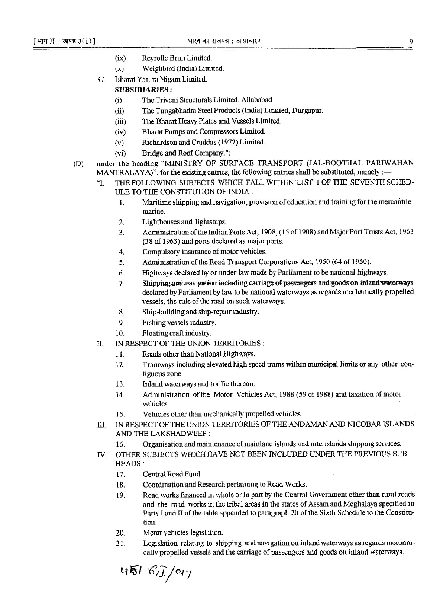
6Schedule 2 › MINISTRY OF SURFACE TRANSPORT
- I. THE FOLLOWING SUBJECTS WHICH FALL WITHIN 'LIST 1 OF THE SEVENTH SCHED- ULE TO THE CONSTITUTION OF INDIA :
- 1. Maritime shipping and navigation; provision of education and training for the mercantile marine.
- 2. Lighthouses and lightships.
- 3. Administration of the Indian Ports Act, 1908, (15 of 1908) and Major Port Trusts Act, 1963 (38 of 1963) and ports declared as major ports.
- 4. Compulsory insurance of motor vehicles. vi Administration of the Road Transport Corporations Act, 1950 (64 of 1950).
- 5. 6. Highways declared by or under law made by Parliament to be national highways. 7 Shipping and navigation including carriage of passengers and goods on inland waterways declared by Parliament by law to be national waterways as regards mechanically propelled vessels, the rule of the road on such…
and 60 more
- 8. Ship-building and ship-repair industry.
- 9. Fishing vessels industry.
- 10. Floating craft industry.
- II. IN RESPECT OF THE UNION TERRITORIES :
- 11. Roads other than National Highways.
- 12. Tramways including elevated high speed trams within municipal limits or any other contiguous zone.
- 13. Inland waterways and traffic thereon.
- 14. Administration of the Motor Vehicles Act, 1988 (59 of 1988) and taxation of motor vehicles.
- 15. Vehicles other than mechanically propelled vehicles.
- IU. IN RESPECT OF THE UNION TERRITORIES OF THE ANDAMAN AND NICOBAR ISLANDS AND THE LAKSHADWEEP:
- 16. Organisation and maintenance of mainland islands and interislands shipping services.
- IV. OTHER SUBJECTS WHICH HAVE NOT BEEN INCLUDED UNDER THE PREVIOUS SUB HEADS:
- 17. Central Road Fund.
- 18. Coordination and Research pertaining to Road Works.
- 19. Road works financed in whole or in part by the Central Government other than rural roads and the road works in the tribal areas in the states of Assam and Meghalaya specified in Parts I and II of the table appended to paragraph 20 of the Sixth Schedule to the Constitution. 22 Motor vehicles…
- 20. 21. Legislation relating to shipping and navigation on inland waterways as regards mechanically propelled vessels and the carriage of passengers and goods on inland waterways. 10
- II. PART II
- 22. Planning of road and inland waterways transport. 23
- 23. Promotion of Transport Cooperatives in the field of motor transport and inland water transport.
- 24. Development of townships of Gandhidham. 232 Legislation relating to and coordination of the development of minor and major ports.
- 2. 5. 26. Administration of the Dock Workers (Regulation of Employment) Act, 1948 (9 of 1948) and the Schemes framed thercunder other than the Dock Workers (Safety, Health and Welfare) Scheme, 1961.
- 27. To make shipping arrangements for and on behalf of the Government of India /Public Sector Undertakings/State Governments/State Government Public Sector Undertakings and autonomous bodies in respect of import of cargo on FOB/FAS and export on C&F/CIF basis.
- 28. Formulation of the privatisation policy in the infrastructure areas of ports, shipping, roads and inland waterways.
- V. SUBORDINATE OFFICES :
- 29. Directorate General of Shipping.
- 30. Andaman Lakshadweep Harbour Works.
- 31. Directorate General of Lighthouses and Lightships.
- 32. Minor Ports Survey Organisation.
- VI. AUTONOMOUS BODIES :
- 33. Port Trusts at Mumbai, Calcutta, Kochi, Kandla, Chennai, Mormugao, Jawahar Lal Nehru 33 (Nhava Sheva), Paradip, Tuticorin, Visakhapatnam and New Mangalore.
- 34. Dock Labour Boards at Calcutta, Kandia, Chennai, Mormugao and Visakhapatnam
- 35. Inland Waterways Authority of India.
- 36. Seamen's Provident Fund Organisation.
- 37. National Highways Authority of India.
- VII. SOCIETIES/ASSOCIATIONS:
- 38. National Institute of Port Management.
- 39. National Ship Design and Research Centre.
- 40. National Institute of Training for Highway Engineers.
- 41. Seafarers Welfare Fund Society.
- VIII. PUBLIC SECTOR UNDERTAKINGS: 42, Shipping Corporation of India.
- 43. Hindustan Shipyard Limited.
- 44. Cochin Shipyard Limited.
- 45. Central Inland Water Transport Corporation Limited.
- 46. Indian Road Construction Corporation.
- 47. Dredging Corporation of India.
- 48. Hooghly Dock and Ports Engineers Limited.
- IX. INTERNATIONAL ASPECTS :
- 49. International Maritime Organisation. ✗. ACTS:
- 50. Indian Ports Act, 1908 (15 of 1908).
- 51. Inland Vessels Act, 1917 (1 of 1917).
- 52. Dock Workers (Regulation of Employment) Act, 1948 (9 of 1948).
- 53. Road Transport Corporations Act, 1950 (64 of 1950).
- 54. National Highway Act, 1956 (48 of 1956)
- 55. Merchant Shipping Act, 1958 (44 of 1958).
- 56. Major Port Trusts Act, 1963 (38 of 1963).
- 57. Scamen's Provident Fund Act, 1966 (4 of 1966).
- 58. Inland Waterways Authority of India Act, 1985 (82 of 1985).
- 59. Motor Vehicles Act, 1988 (59 of 1988).
- 60. National Highways Authority of India Act, 1988 (68 of 1988).
- 61. Multimodal Transportation of Goods Act, 1993 (28 of 1993).
applied at schedule 2 › ministry Ministry of Surface Transport in the Rules after #235
read page break
Page 10 of 12
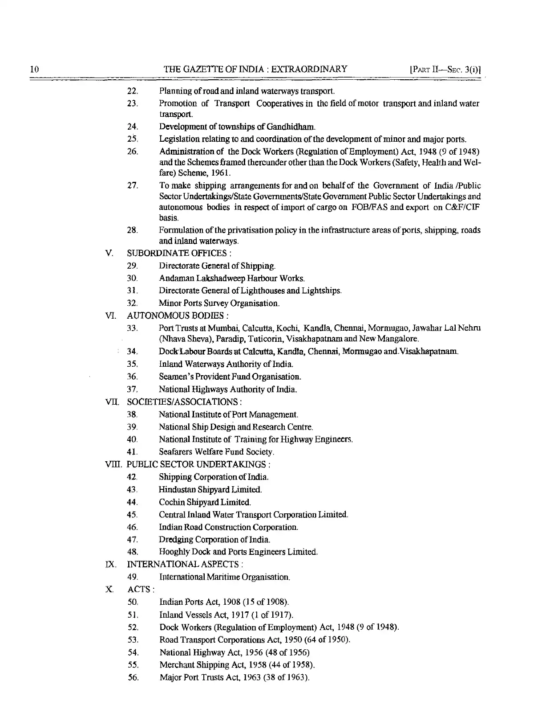
Page 11 of 12
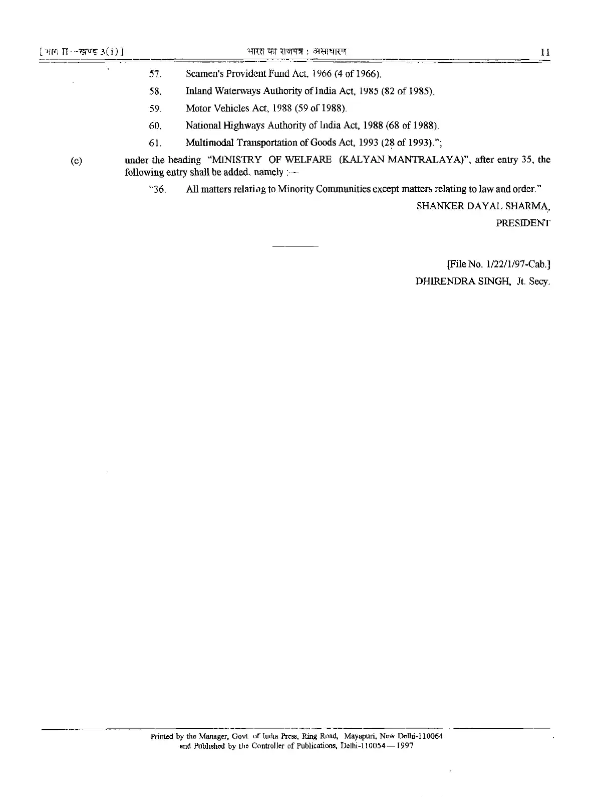
7after Schedule 2 › MINISTRY OF WELFARE › entry 35
- 36. All matters relating to Minority Communities except matters relating to law and order.
not applied (the change could not be placed in the Rules as read; see How this document was read)
Page 12 of 12
How this document was read
Known issues
| Change | Issue | Known as |
|---|---|---|
| 7 | change 7: no entry 35 under schedule 2 › ministry MINISTRY OF WELFARE (KALYAN MANTRAL AYA). | Entries not in the state |
From the Government of India (Allocation of Business) Rules, 1961 and their amendments, as published by the Cabinet Secretariat (cabsec.gov.in), read by orgpedia. The readings of the older scanned gazettes have known gaps.